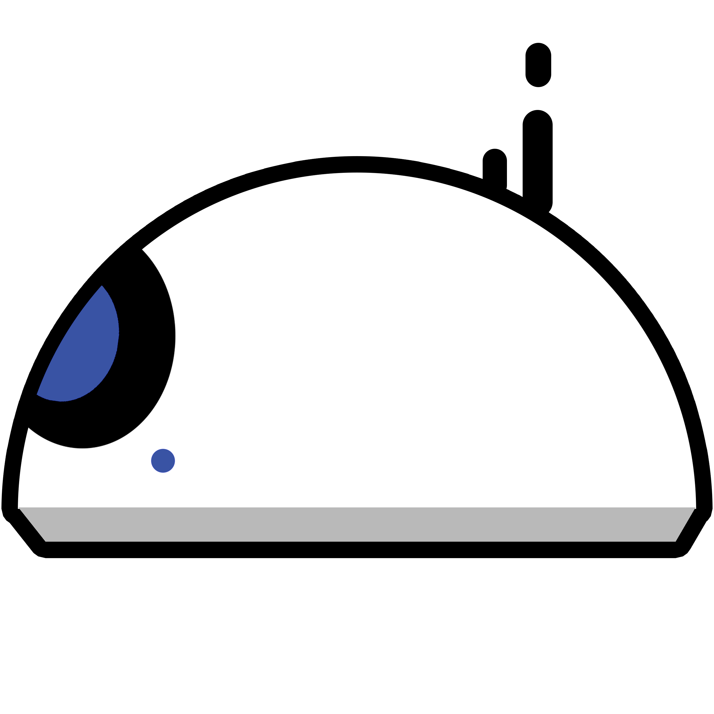
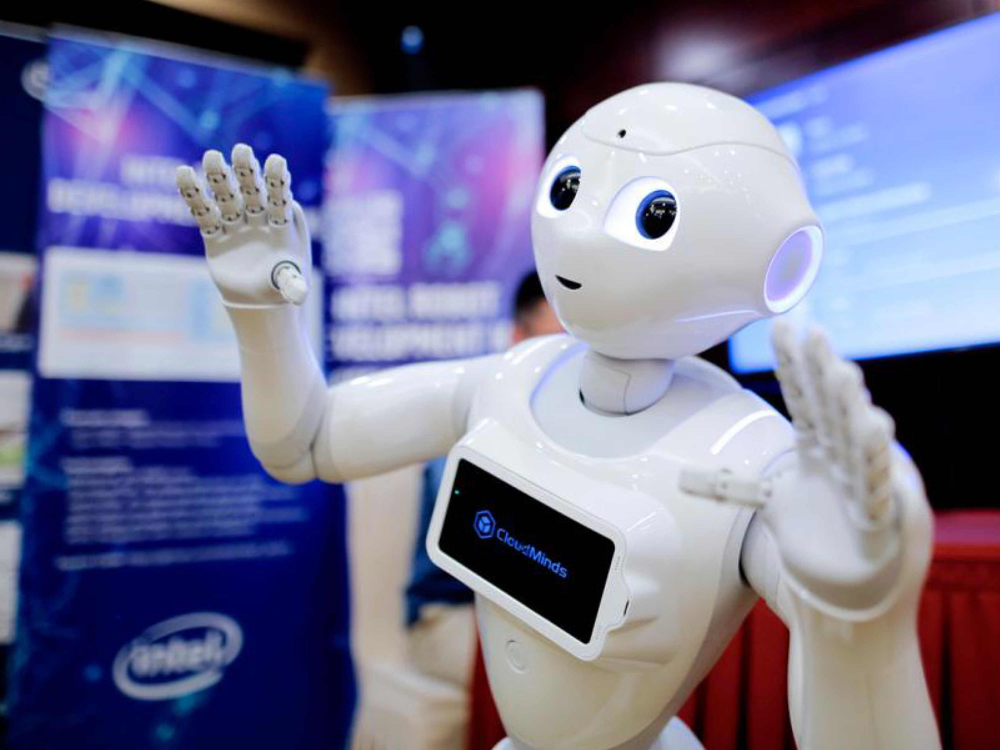
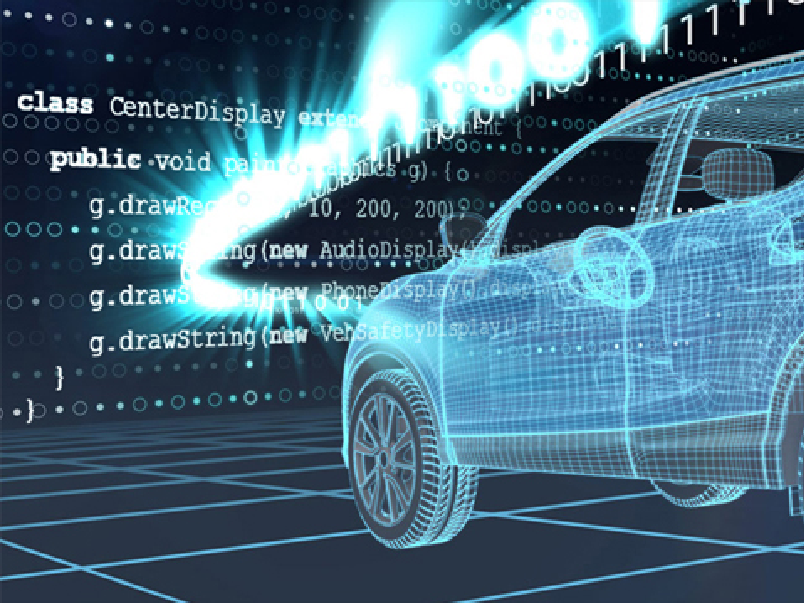
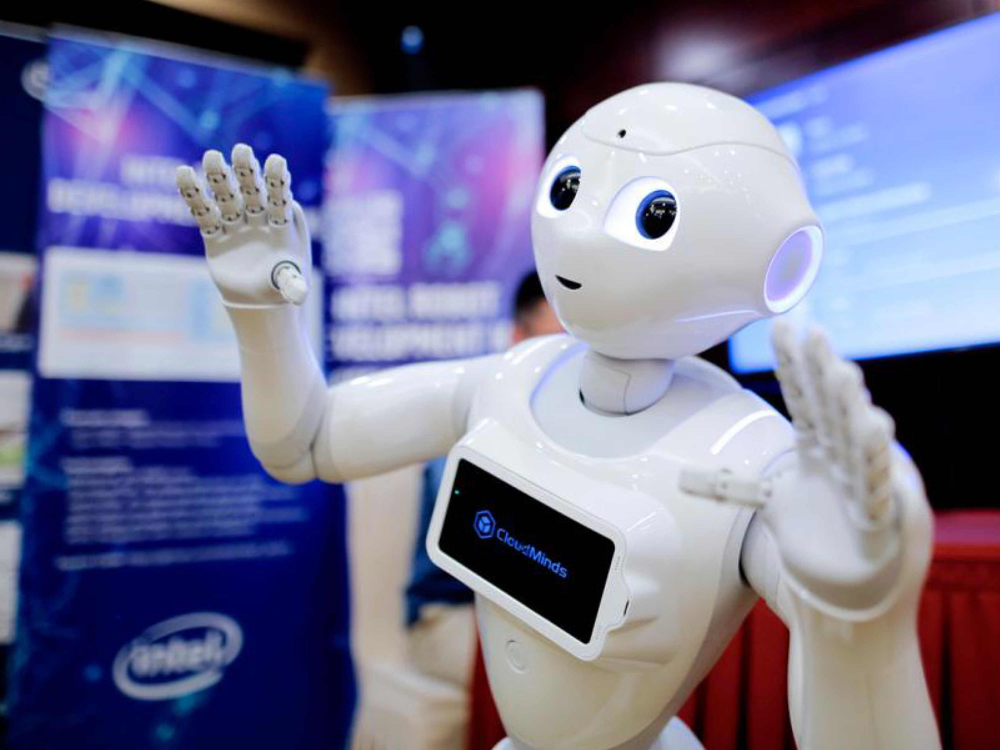
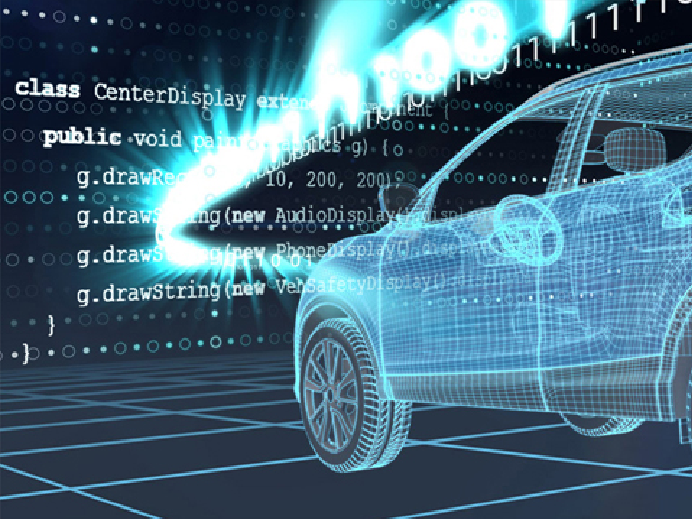

BSc Computer Science (Artificial Intelligence)
Why study a BSc in Computer Science - Artificial Intelligence at The British University in Dubai?
Artificial Intelligence (AI) is the attempt to build artificial systems that have intelligent behaviour. There are two main directions of research that are followed in the BSc in Computer Science programme. One is to enable students to comprehend natural intelligence through the utilisation of computer models. The other enables students to develop methods and innovation to build systems capable of intelligent decisions and actions. In this way, the AI that students learn is both a science and an engineering discipline. Applications of AI range from “smart” controllers for household devices to computers that can converse in natural languages such as English, play computer games, conduct intelligent web searches, or act as the brain of a robot. The recent major trend is the Fourth Industrial Revolution or Industry 4.0 for establishing a “smart factory”. It is an integration of Computer Science and smart solutions, for the automation and data exchange in manufacturing technologies. It includes cyber-physical systems, the Internet of Things, cloud computing, and cognitive computing. At BUiD we support students to get such experiences by giving them the opportunities to participate in study trips and internships, both in the UAE and internationally.
-
-
-
-
-
-
Programme description
Students will be able to apply core knowledge of computer fundamentals to solve a range of practical computer and AI problems and be aware of the social, professional, ethical and legal issues involved in the use of computing systems. Student will get familiar with state-of-the-art, emerging computing techniques and technologies, and learn advanced AI techniques and their applications.
Students will be able to demonstrate effective work habits, leadership, and social responsibility roles in context, apply new techniques and technologies as they emerge, analyse problems and create an appropriate algorithmic solution, and develop communication skills, initiative, professionalism and the ability to work independently as well as with others.
 



Career prospects
If you are considering studying a Bachelors in Computer Science – Artificial Intelligence, you probably already know that this can lead to a very wide range of careers and jobs. According to data from job search sites, we will keep on observing employment development in anything AI-related for the following five to ten years, which is something that will mitigate the often-publicised inevitable job losses due to AI-led automation. The following are the top six most in-demand software engineering jobs: software developer, data scientist, research scientist, R&D engineer, business intelligence developer, and computer vision engineer.
The job opportunities do not end with the categories listed above. You can find other types of jobs related to Computer Science/Artificial Intelligence that suit your needs. The best part is that this field is continually developing, so new job titles and new tasks will come up all the time.
Course Structure